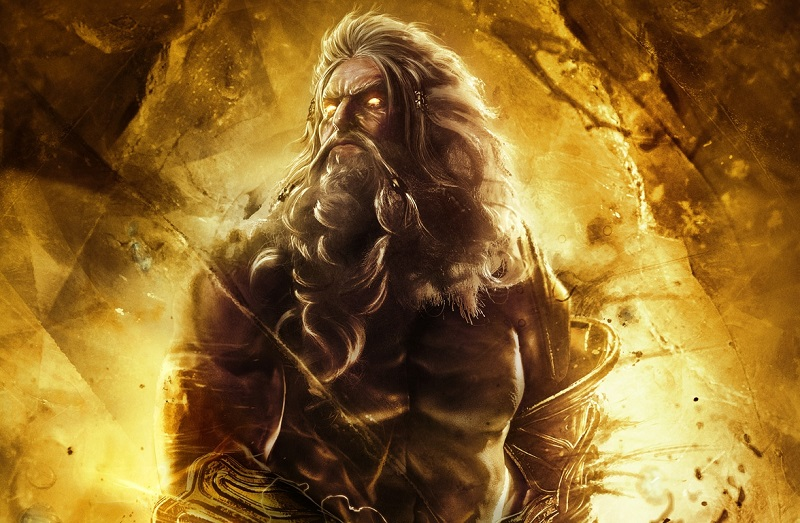

• Apollo • Ares • Artemis • Athena • Hades • Hephaestus • Hera • Hermes • Hestia • Poseidon • Zeus

Zeus is the Olympian god of the sky and the thunder, the king of all other gods and men, and, consequently, the chief figure in Greek mythology. The son of Cronus and Rhea, he is probably most famous for his infidelity to his sister and wife, Hera. Athena, Apollo and Artemis, Hermes, Dionysus, Heracles, Helen of Troy, and the Muses are all children of his numerous erotic affairs. Hephaestus, Hebe, and Ares are his legitimate children.
Poseidon is the violent and ill-tempered god of the sea. One of the Twelve Olympians, he was also feared as the provoker of earthquakes and worshipped as the creator of the horse. A hot-blooded deity, Poseidon had many disputes with both gods and men, most famously with Athena and Odysseus.